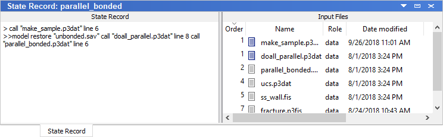

状态记录 窗格
概述
状态记录 窗格跟踪创建当前模型状态的输入。窗格内容的部分或全部可根据需要复制并粘贴到其他位置，或保存为记录文件格式或数据文件格式的新文件。如果当前模型状态是现有保存文件的一部分，则该文件的名称显示在窗格标题栏中。
状态记录 窗格组件


图 1：状态记录 窗格。
该窗格分为两部分。“状态记录”面板（左侧）列出已创建当前模型状态的命令。“输入文件”面板（右侧）列出在得到当前模型状态的过程中已使用的输入文件。
状态记录 面板
此处的命令列表不会展开通过 调用数据文件（program call） 调用的数据文件内所包含的命令——一个被调用的 1000 行数据文件在此视图中将显示为单行的 调用数据文件（program call） 命令。此处的输出很可能会将可选的 line 关键字与 调用数据文件（program call） 命令一起使用，以跟踪单个或嵌套的 调用数据文件（program call） 命令，从而跟踪创建当前状态的命令路径。有关 line 关键字如何使用的说明，请参见 调用数据文件（program call） 命令参考信息。此视图的内容可以使用工具栏上可用的工具进行复制或保存。
输入文件 面板
此视图以表格形式列出为创建当前模型状态而调用或导入的文件。除非进行排序，否则面板将按文件的使用顺序显示文件——这通过表格的第一列（“顺序”）反映。还会显示文件名、日期和大小列。单击列标题可按任意列的升序或降序对列表进行排序。
指示图标
输入文件 中的图标按以下图例传达所列文件的状态信息。
- 已打开、未更改
- 该项目项处于打开状态，且自用于创建当前模型状态以来未发生更改。
- 已打开、已更改
- 该项目项处于打开状态，且自用于创建当前模型状态以来已发生更改。
 已关闭、未更改
已关闭、未更改- 该项目项处于关闭状态，且自用于创建当前模型状态以来未发生更改。
- 已关闭、已更改
- 该项目项处于关闭状态，且自用于创建当前模型状态以来已发生更改。
 失效
失效- 链接已失效；在项目当前记录的位置上找不到该文件。
如果某个文件自用于创建当前模型状态以来已被修改（由上文两个显示红点的状态表示），则无法保证此时可以用它来重现当前模型状态。
| 这些内容对您有帮助吗？… | FLAC3D © 2019, Itasca | 原文更新于 2020 年 10 月 8 日 |